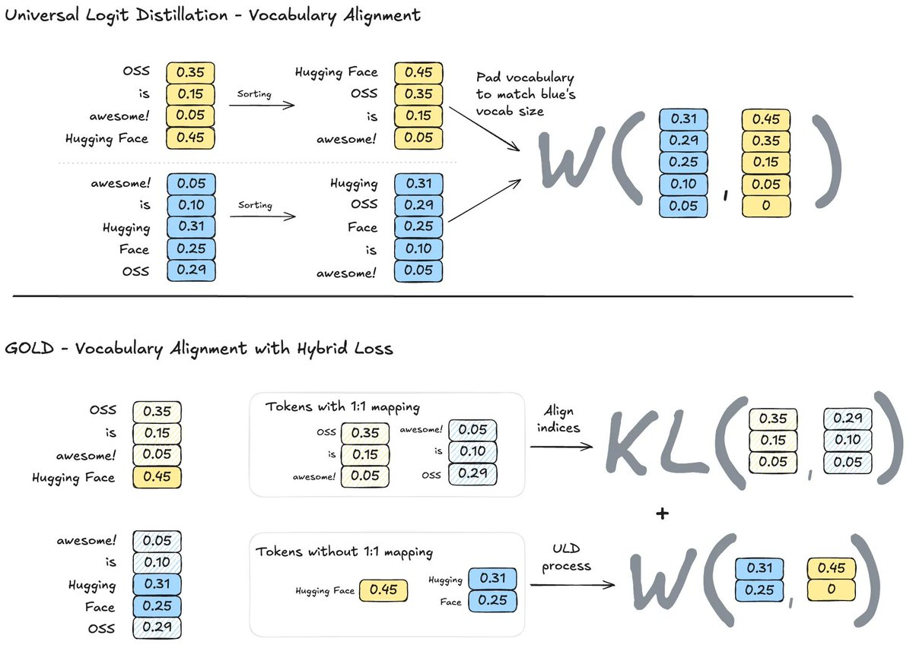
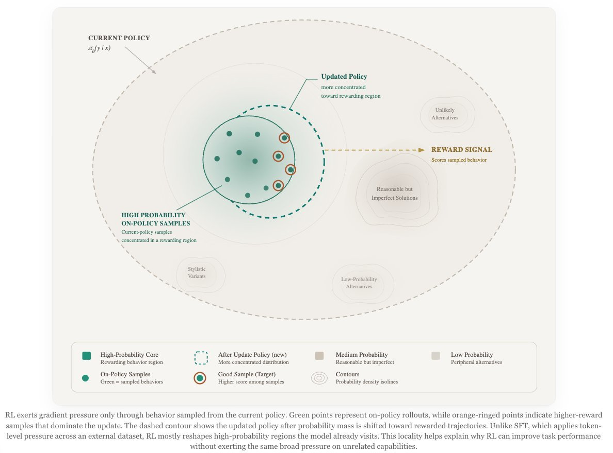
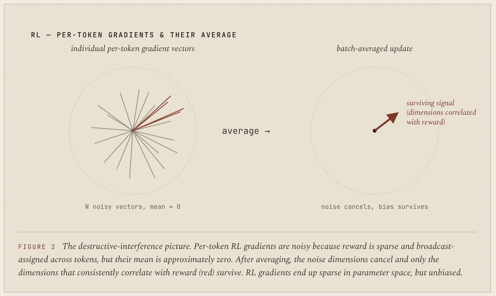
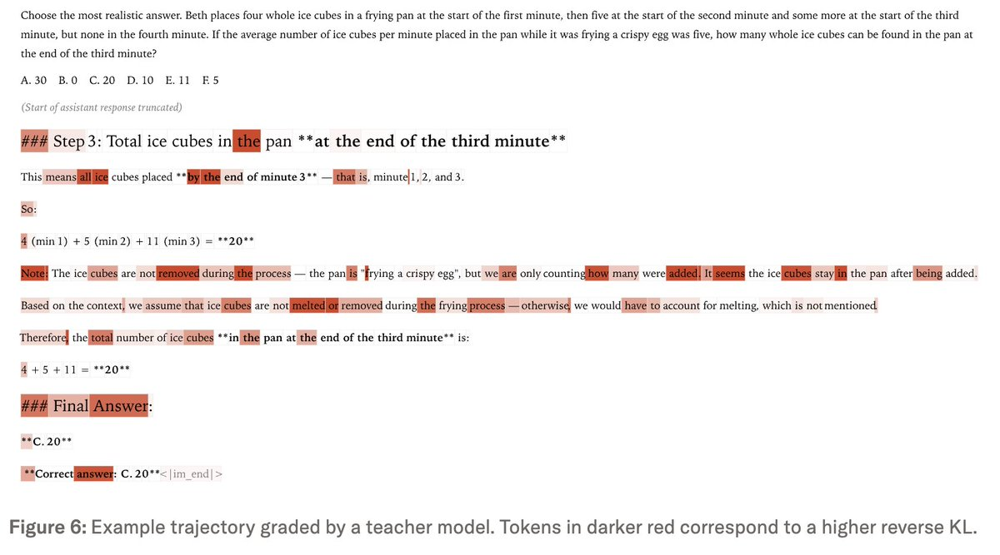

核心问题是传统 OPD 假设 teacher 和 student 共用 tokenizer。GOLD 用 sequence alignment 和 vocabulary alignment 把不同 tokenizer 的 token/logprob 对齐，使 Qwen teacher 到 Llama/Gemma student 这类跨模型族 OPD 变得可行。
为什么先读：它把 OPD 的工程约束讲得最直观。
这条 X 帖本身很短，但它指向的是一个正在成型的 post-training 范式：让学生模型自己生成轨迹， 再用老师模型、同一模型的 privileged context、或多个专家老师在这些轨迹上给 token-level 信号。 它不是“蒸馏又回来了”这么简单，而是 SFT、RL、OPD、OPSD 正在围绕同一个问题收敛： 如何在不把模型拉离原有分布太远的前提下，给它更密、更便宜、更可控的训练信号。
它不是单纯推荐几篇文章，而是在给一个阅读顺序：先理解 OPD 的基本机制，再看跨 tokenizer 工程化， 再看大 teacher 的系统瓶颈，最后进入 OPSD / MOPD 这种“老师怎么构造”的新问题。
我的归纳：AVB 的判断是，2026 年 post-training 的主战场会从“要不要 RL”转向 “如何把 on-policy rollout 和 dense teacher signal 结合起来”。如果老师是外部强模型，就是 OPD； 如果老师是同一个模型但带 answer、demo、hint、system prompt、privileged context，就是 OPSD / SDFT / SDPO 一族； 如果老师是多个专家 checkpoint，就是 MOPD。
| 方法 | 数据从哪里来 | 训练信号是什么 | 主要好处 | 主要风险 |
|---|---|---|---|---|
| SFT | 固定数据集，通常是人类或老师生成的答案。 | 交叉熵：每个 token 都被当成正确标签。 | 简单、稳定、适合 cold start 和格式塑形。 | off-policy，容易 exposure bias 和 catastrophic forgetting。 |
| RL / RLVR | 学生自己生成 rollout。 | 序列级 reward / advantage，通常很稀疏。 | on-policy，能探索 verifier 能判分的新策略。 | 样本和算力贵，credit assignment 很粗。 |
| OPD | 学生自己生成 rollout。 | 老师在学生 rollout 上给每个 token 的 logprob / KL 信号。 | 保留 on-policy，又比 RL 信号密。 | 需要老师 logprobs；teacher-student mismatch 会污染信号。 |
| OPSD / SDFT / SDPO | 学生或同一模型生成 rollout。 | 同一模型在 privileged context 下形成临时 teacher。 | 不需要外部同族大老师，理论上更易扩展。 | 老师信号可能被 hint/answer/style token 强烈偏置，必须控制 KL 和 clipping。 |
对 OPD 最容易误解的地方是把它理解成“老师给学生生成答案”。更准确地说，学生先走自己的路， 老师再在学生已经走过的每个 prefix 上说：这个 token 我会更支持还是更不支持。
输入一批问题或任务，不先让老师写标准答案。
当前学生模型按自己的策略生成完整或部分回答。
老师不重新生成，而是在学生同一串 token 上计算 logprob。
比较学生与老师对同一 token 的概率差，形成 per-token advantage。
像 RL 一样训练，但 advantage 来自老师分布而不是 outcome reward。
如果老师对某个学生采样出的 token 给的概率比学生自己更高，训练会把这个 token 往上推；如果老师更不认可，就往下压。 这就是为什么很多文章会说 OPD 可以看成“把 GRPO 里的 advantage 换成 teacher-student log-ratio”。 这句话听上去抽象，但工程含义很具体：已有 RL 训练框架里，rollout、importance ratio、clip、batching 很多东西可以复用， 只是 reward/advantage 的来源变成 teacher logprobs。
因为训练数据来自学生当前策略。模型在训练中看到的是自己会犯的错、自己会走到的 prefix，而不是老师自己生成出来的完美轨迹。
因为每个 token 的方向来自老师分布。相比 RL 的 outcome reward，它能给出更密的局部信号，但也继承了老师分布的偏差。
这个顺序有清晰的学习曲线：先建立“OPD 是什么”，再理解“跨模型族怎么做”，再理解“系统怎么跑得动”， 最后进入“OPSD/MOPD 为什么成为新 primitive”。
核心问题是传统 OPD 假设 teacher 和 student 共用 tokenizer。GOLD 用 sequence alignment 和 vocabulary alignment 把不同 tokenizer 的 token/logprob 对齐，使 Qwen teacher 到 Llama/Gemma student 这类跨模型族 OPD 变得可行。
这篇是最清楚的 OPD 机制文章：学生生成 rollout，老师计算同一 token 的 logprob，用 reverse KL 做 per-token dense signal；还讨论数学 reasoning、personalization、continual learning 和 compute efficiency。
重点不是新 loss，而是系统工程：generation buffer、teacher server request batching、binary logprob payload。它解释了为什么 OPD 从论文想法变成可跑 100B+ teacher 的训练工具。
这篇把 SFT/RL/OPD 看成“如何移动模型分布”。重点 insight 是：OPD 的抗遗忘不一定来自老师强，而来自 on-policy data 对学生分布的隐式约束。
这篇把 SFT、RL、OPD、OPSD 放到 sparse/dense、biased/unbiased、diffuse/concentrated 的梯度几何里。它最重要的贡献是指出 OPSD 的危险来自“dense + biased + concentrated”。
这篇把 OPD 从单 teacher 扩展到生产级多老师合并：MiMo、GLM、Nemotron、DeepSeek-V4 都在用不同形式的 MOPD 做能力合并、遗忘恢复或大规模专家 consolidation。
“S” 可以理解为 self。OPD 里通常有一个外部 teacher；OPSD / SDFT / SDPO 里，teacher 往往是同一个模型在不同 context 下的分布。 这让它更容易获得 tokenizer/recipe match，但也让 privileged context 的偏差成为主问题。
每个 token 都有标签，信号很密，但目标分布固定且可能离当前模型很远。因为数据多样，偏差通常比较分散。
reward 稀疏，很多 token 的 credit assignment 很粗，但 on-policy 和 outcome reward 让它较少被某个具体 token 轨迹绑死。
同族强老师的 logprob 给 dense signal；如果老师和学生分布接近，KL 差异通常不会集中在少数怪 token 上。
同一模型带 answer/hint/demo 后，少数 pivot/style token 的 KL 可能极大，训练信号容易被这些 token 主导。
Will Brown 文章里最值得记住的不是某个公式，而是这个梯度形状判断：RL 很慢，但噪声可以在大 batch 平均后抵消； SFT 有偏，但偏差被大量样本摊开；OPD 有偏，但如果老师是 same-family teacher，偏差相对自然； OPSD 的危险在于 privileged context 会让老师在某些 pivot token 上突然非常自信，而学生原本几乎不相信这些 token。 这会形成一次很尖锐的参数更新，所以 OPSD 往往需要 per-token clipping、固定 reference teacher、KL budget 或更好的 hint construction。
举个直观例子：学生在一道数学题中没有想到“换元”这个关键动作，给“let”或某个 substitution token 的概率只有 0.01。 teacher 因为看到了答案或提示，突然认为这个 token 概率应该是 0.6。log-ratio 大约是 log(60)，这个 token 就会压过很多普通 token。 如果这个 token 真是任务 pivot，更新有用；如果它只是“wait”“therefore”这类风格 token，模型就会朝错误方向过拟合。 所以 OPSD 的核心问题不是“有没有信号”，而是“信号到底是不是 causally task-relevant”。
这批资源里的实验并不都在证明同一件事。Thinking Machines 更像 OPD 总论和应用验证； HF GOLD 验证跨 tokenizer 可行性；TRL 验证系统吞吐；wh/Will Brown 更多是解释性和小实验； MOPD 文章则汇总 frontier report 的 pipeline 收敛。
| 来源 | 评估对象 | 输入/输出 | 指标或观察 | 能支持的结论 |
|---|---|---|---|---|
| Thinking Machines | Qwen 系列 reasoning 和 personalization 训练。 | 数学题、Tulu3 chat prompts、内部文档 QA 等。 | AIME、IF-eval、内部 QA；还比较 OPD vs RL 训练步数和 compute。 | OPD 能把学生自己 rollout 上的 dense teacher signal 转成便宜的后训练收益，尤其适合恢复/保留行为能力。 |
| HF GOLD | 不同 tokenizer / 不同模型族的 OPD。 | Countdown 数学游戏：给数字和目标值，输出满足格式的算式。 | Countdown correctness、tokenizer similarity、GKD/GOLD/ULD/GRPO 对比。 | 跨 tokenizer OPD 不是不可能，但效果强依赖 alignment 质量和 tokenizer similarity。 |
| HF TRL | 大 teacher OPD 的工程吞吐。 | 学生生成 rollout，外部 vLLM teacher server 返回 top-k logprobs。 | generation buffer speedup、teacher server p99 latency、payload size、AIME25/GPQA 观察。 | OPD 的瓶颈不只是 loss，而是 rollout batching、teacher logprob serving、payload 编码。 |
| wh | Minimal Code Editing 小实验中的 SFT teacher / RL teacher / OPD student。 | 给 buggy function，要求只修 bug 不重写其他部分。 | generalization、catastrophic forgetting、LiveCodeBench 退化。 | OPD student 从 SFT teacher 和 RL teacher 学到的结果相似，提示 on-policy data 可能比 teacher 来源更关键。 |
| Will Brown | post-training 方法的梯度几何解释。 | 方法论文章，不是新 benchmark。 | sparse/dense、biased/unbiased、diffuse/concentrated 三轴分析。 | OPSD 的不稳定性可以被理解为 dense biased concentrated update，而不是简单的“蒸馏不行”。 |
| Yumo Xu MOPD | MiMo、GLM、Nemotron、DeepSeek-V4 等多老师后训练报告。 | 多个专家 checkpoint / 多领域 teacher 对同一个 student 做 consolidation。 | teacher composition、pipeline stage、IcePop train/infer mismatch、full-vocab logits、teacher scheduling。 | OPD 已经在生产级 pipeline 中变成能力合并和遗忘恢复 primitive。 |
从工程角度看，OPD 是一个数据流和系统问题，不只是换一个 loss。下面是最小可复现思路。
for prompt_batch in dataset:
# 1. student generates on-policy rollouts
rollouts = student.generate(prompt_batch, temperature=T)
# 2. compute student logprobs on sampled tokens
student_logprobs = student.logprobs(rollouts)
# 3. teacher scores exactly the same sampled tokens
teacher_logprobs = teacher.logprobs(rollouts)
# 4. reverse-KL-style token advantage
token_advantage = stop_gradient(teacher_logprobs - student_logprobs)
# 5. train with policy-gradient / importance-sampling style loss
loss = -sum(token_advantage * student_logprobs)
update(student, loss)有没有 teacher logprobs？只有 API sample 没有 logits 时，标准 OPD 会变困难，需要 black-box OPD、rubric、reward model 或 sample-based surrogate。
同 tokenizer 最简单；不同 tokenizer 需要 GOLD/ULD 这类 sequence + vocabulary alignment，否则 token-level KL 没有明确对应物。
老师太强不一定更好。capacity gap 过大时，学生可能吸收不了老师的额外能力，还可能损伤 out-of-domain 能力。
“2026 是 OPD/OPSD 年”这个说法有合理性，但要避免把它读成一个已经解决的问题。
成立的部分：OPD 正在从论文方法变成后训练基础设施。HF 有 trainer，Thinking Machines 给出清晰 recipe， MOPD 在多个 frontier report 中出现，TRL 的工程优化说明 teacher logprob serving 正在被产品化。 对模型压缩、专家能力合并、持续学习后的行为恢复、domain specialization 后的 anti-forgetting，OPD 的确很有吸引力。
还没成立的部分：OPSD 作为“没有外部老师也能获得 dense useful signal”的路线仍然非常早。 它最大的问题不是实现，而是 credit assignment：privileged context 让 teacher 更确定，但这种确定性到底来自任务因果信息， 还是来自答案泄漏、提示风格、轨迹后见之明？如果不能区分，dense signal 只是把错误偏差更快注入模型。
最实际的判断：短期内最可靠的不是纯 OPSD，而是混合路线： SFT 做 cold start，RLVR 在可验证任务上找策略，OPD/MOPD 做专家能力合并和遗忘恢复， OPSD/SDFT/SDPO 做低成本局部增强，但必须配 KL budget、clipping、teacher prompt 搜索或 outcome reward 校准。
这一轮 OPD 热潮真正改变的不是“蒸馏能不能超过 SFT”，而是 post-training 的抽象层级： 我们不再只问“用 SFT 还是 RL”，而是在拆三个独立变量： 样本分布是不是 on-policy、信号是不是 dense、老师/奖励的偏差是否可控。 SFT 输在样本分布固定；RL 输在信号太稀疏；OPD 的优势是把前两者组合起来； OPSD 的野心是把“老师”也变成一个可优化对象。
所以我会把 AVB 这条帖理解成一个研究路线图，而不是资源推荐： 2026 年真正值得追的是 teacher construction under KL budget。 谁能构造出“让 reward 上升，但不把学生分布拉太远”的 teacher context / hint / expert mixture， 谁就能把 OPSD 从一组启发式变成新的训练 primitive。
以下为原帖 4 张 media 的本地抓取版。它们证明原帖确实包含图像证据，但由于 X media 抓取/截图质量问题， 本报告不依赖这些图片做关键技术结论。




原帖通过 OpenCLI 的 X/Twitter adapter 读取；短链逐一解析；外部文章用 OpenCLI web reader 读取。
其中两个 X Article 不能用 twitter article 直接读取，但可以用 web read 从
x.com/i/article/... 读取完整正文。
AVB 写道：2026 正在成为 OPD 的一年，更准确说是 OPSD，并建议按顺序阅读 Hugging Face、Thinking Machines、TRL、wh、Will Brown 和 multi-teacher OPD 资源。
AVB 的 profile 显示其内容集中在 Neural Breakdown、研究阅读和 DPO/RLM/synthetic data 等方向。这里用于理解帖子语境，不作为技术事实来源。
短链分别指向 HF GOLD Space、Thinking Machines OPD、HF TRL DistillationTrainer、wh 的 X Article、Will Brown 的 X Article、Yumo Xu 的 MOPD Notion，以及回复中的 awesome OPD 仓库。
搜索用于核验动态页面标题与外部链接；主体解释仍以 OpenCLI 抽取的一手文本、官方 Hugging Face / Thinking Machines / GitHub / Notion 内容为准。
用于获取材料的关键命令如下，便于以后复查。
opencli list -f yaml | rg -i "twitter|x.com"
opencli twitter --help
opencli twitter thread --help
opencli twitter thread "https://x.com/neural_avb/status/2054640032087146727" --limit 80 -f json --trace retain-on-failure
opencli twitter profile "neural_avb" -f json --trace retain-on-failure
curl -Ls -o /dev/null -w '%{url_effective} %{http_code}\n' "https://t.co/..."
opencli web read --url "https://thinkingmachines.ai/blog/on-policy-distillation/" --stdout true --download-images false --wait 5 -f json
opencli web read --url "https://huggingfaceh4-on-policy-distillation.hf.space/" --stdout true --download-images false --wait 10 -f json
opencli web read --url "https://huggingfacetb-trl-distillation-trainer.hf.space/" --stdout true --download-images false --wait 10 -f json
opencli web read --url "https://x.com/i/article/2053122221389053953" --stdout true --download-images false --wait 8 -f json
opencli web read --url "https://x.com/i/article/2050010745375768576" --stdout true --download-images false --wait 8 -f json